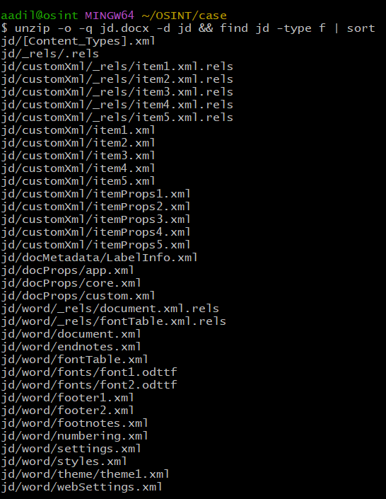
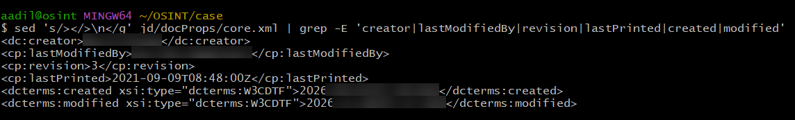
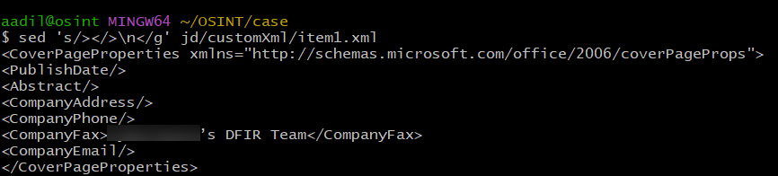
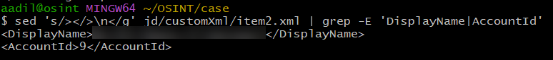
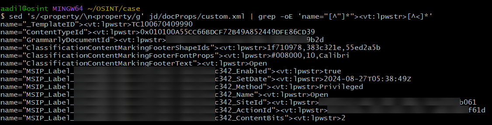
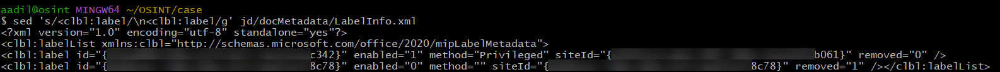
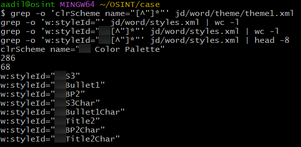
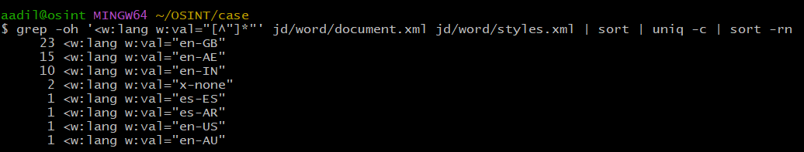
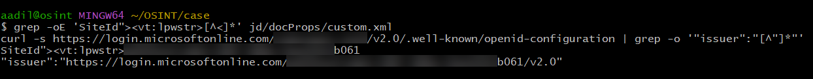

Attributing an Anonymised .docx From Its Metadata
If you've job hunted through agencies you know the drill. The recruiter won't tell you who the client is until you've done their screening call, so you burn half an hour selling yourself to a company you know nothing about, and sometimes find out at the end it's one you'd never have applied to.
So when a recruiter sent me a JD as a .docx with "our client" all over it and the company name stripped out, I figured the metadata was worth a look before replying. Word files carry a lot more than the text, and people almost never clean them properly. About twenty minutes of poking around later I knew who the client was, and had it confirmed a few different ways. This is roughly how that went.
Everything here comes from the file I was sent plus one unauthenticated public lookup. Names, IDs and anything identifying are blurred in the screenshots. Click any screenshot for the full size version.
Unpacking it
A .docx is an OPC package, a zip of XML parts. I work on a copy and unzip it:


36 parts. The ones worth checking for attribution are docProps/ (core, app and custom properties), customXml/ (data stores, usually written by SharePoint or by templates), docMetadata/LabelInfo.xml (sensitivity labels), and the theme and styles under word/.
core.xml


dc:creator and cp:lastModifiedBy are two different people. The last editor saved it a few minutes before it was sent to me, which fits the person who sent it. Revision count is 3.
The useful field is cp:lastPrinted, which is 2021, five years before dcterms:created. Save As gives the new file a fresh created date, but lastPrinted is carried over from the original. So this document was built on top of something much older. I didn't use the creator name for attribution because I couldn't tie it to anyone.
word/settings.xml backs this up. Word records a revision save ID (rsid) for each editing session and keeps the list in settings. This file lists 594 of them, but only 6 are actually used in document.xml. My reading is that the template went through hundreds of editing sessions over the years, and the JD text was then pasted into it fresh. Forensic examiners use shared rsids to link documents edited in the same sessions, so a second document from the same template could likely be tied back to this one.
customXml/item1.xml: cover page properties


This is the data store behind Word's built-in cover pages. The cover page content controls are data-bound to these elements, so when someone types into a cover page field, the value gets written here. Deleting the cover page from the document doesn't clear the store.
Every element is empty except CompanyFax, which holds "<organisation>'s DFIR Team", with the organisation's name misspelled by one letter. Presumably someone used the fax field on a cover page template as a subtitle line years ago. This was the first thing that named the organisation directly.
customXml/item2.xml: SharePoint sharing record


When a file sits in a SharePoint document library, the library's columns get written into the file as a p:properties part. SharedWithUsers is one of the default columns. Here it holds a single display name and a site-local account ID. That name is listed as the CEO on the organisation's public company profile.
docProps/custom.xml: sensitivity label


Purview sensitivity labels are written as MSIP_Label_<label GUID>_* custom properties. The values here are:
Name: "Open"SetDate: 2024-08-27Method: Privileged, meaning someone selected the label manually instead of it being applied by default or by policyContentBits: 2, which corresponds to the footer marking ("Open" in green Calibri, matching theClassificationContentMarking*properties above it)SiteId: the Entra tenant ID of the organisation that owns the label
The tenant ID ends in b061. Also present: a GrammarlyDocumentId, a ContentTypeId from the SharePoint library, and a _TemplateID from an Office template.
docMetadata/LabelInfo.xml


LabelInfo.xml is the newer label store. The first entry matches custom.xml: the same label and the same tenant, removed="0". The second entry has a different GUID for both the label and the tenant, and it's flagged removed="1". Per MS-OFFCRYPTO, an application that removes a label writes an entry like this for that tenant so later readers know to ignore the old label properties. I checked that tenant GUID against Microsoft's login endpoint and it's a live tenant, so at some point the document carried a label from a second organisation, and somebody removed it. I haven't identified that one.
Theme and styles


The colour scheme in theme1.xml is named after the organisation's initials, and 68 of the 286 style IDs in styles.xml use the same initials as a prefix (<XX>Title2, <XX>Bullet1 and so on). On its own this is weak, because initials collide. It does match what the cover page field already showed.
Language tags


Word records a proofing language with w:lang, usually taken from the keyboard language of whoever typed the text or edited the style. I expected these on the body text, but document.xml has none. All of them are in style definitions: en-GB 23, en-AE 15 and en-IN 10, plus a few strays. Both the en-AE and the en-IN ones sit on the organisation's own prefixed styles, so they describe whoever built and maintained the template, not whoever sent it to me. en-AE is an unusual locale to see outside the Gulf, and it's consistent with where the organisation operates. I'd treat this as supporting evidence only.
Confirming the tenant
At this point I had a candidate organisation and its domain. Entra exposes an OpenID configuration document for any tenant, looked up by domain, with no authentication needed. The issuer field in the response contains the tenant ID.


The SiteId in the file and the tenant ID for the candidate domain are the same GUID. This is the strongest single piece of evidence in the file: the label was applied by a user in that organisation's own tenant.
Summary
| Artefact | Location | What it gave me | Weight |
|---|---|---|---|
| Cover page store | customXml/item1.xml | Team name containing the organisation's name | Strong |
SharePoint SharedWithUsers | customXml/item2.xml | Display name matching the CEO | Strong |
Label SiteId | docProps/custom.xml, LabelInfo.xml | Tenant ID, matched to the domain | Confirmed |
| Removed label | docMetadata/LabelInfo.xml | A second, unidentified tenant | Open |
| Theme and style prefix | word/theme/theme1.xml, word/styles.xml | Organisation's initials | Medium |
w:lang counts | word/styles.xml | en-AE and en-IN on the organisation's own styles | Weak to medium |
| rsids | word/settings.xml | 594 editing sessions, 6 used in the body | Context |
| Core properties | docProps/core.xml | Who handled it, plus a 2021 template origin | Context |
For anyone sending files they've anonymised
Editing the body text does nothing to any of the above. Before sending:
- Run Inspect Document (File > Info > Check for Issues) and remove document properties and custom XML data.
- Check the sensitivity label separately. I haven't tested exactly what Inspect Document does to the MSIP properties and LabelInfo.xml, so don't assume it removes them. If the file is going outside the organisation, the tenant ID goes with it.
- Don't build anonymised documents on top of internal templates. Start from a blank document, or export to PDF and strip the PDF metadata.
- Unzip the result and check
docProps/custom.xml,customXml/anddocMetadata/yourself before it goes out.
Commands
All of this runs in Git Bash, WSL or any Linux shell. Run it on a copy.
unzip -o -q file.docx -d x && find x -type f | sort
sed 's/></>\n</g' x/docProps/core.xml | grep -E 'creator|lastModifiedBy|revision|lastPrinted|created|modified'
sed 's/></>\n</g' x/customXml/item1.xml
sed 's/></>\n</g' x/customXml/item2.xml | grep -E 'DisplayName|AccountId'
sed 's/<property/\n<property/g' x/docProps/custom.xml | grep -oE 'name="[^"]*"><vt:lpwstr>[^<]*'
sed 's/<clbl:label/\n<clbl:label/g' x/docMetadata/LabelInfo.xml
grep -o 'clrScheme name="[^"]*"' x/word/theme/theme1.xml
grep -oh '<w:lang w:val="[^"]*"' x/word/document.xml x/word/styles.xml | sort | uniq -c | sort -rn
curl -s https://login.microsoftonline.com/<domain>/v2.0/.well-known/openid-configuration | grep -o '"issuer":"[^"]*"'